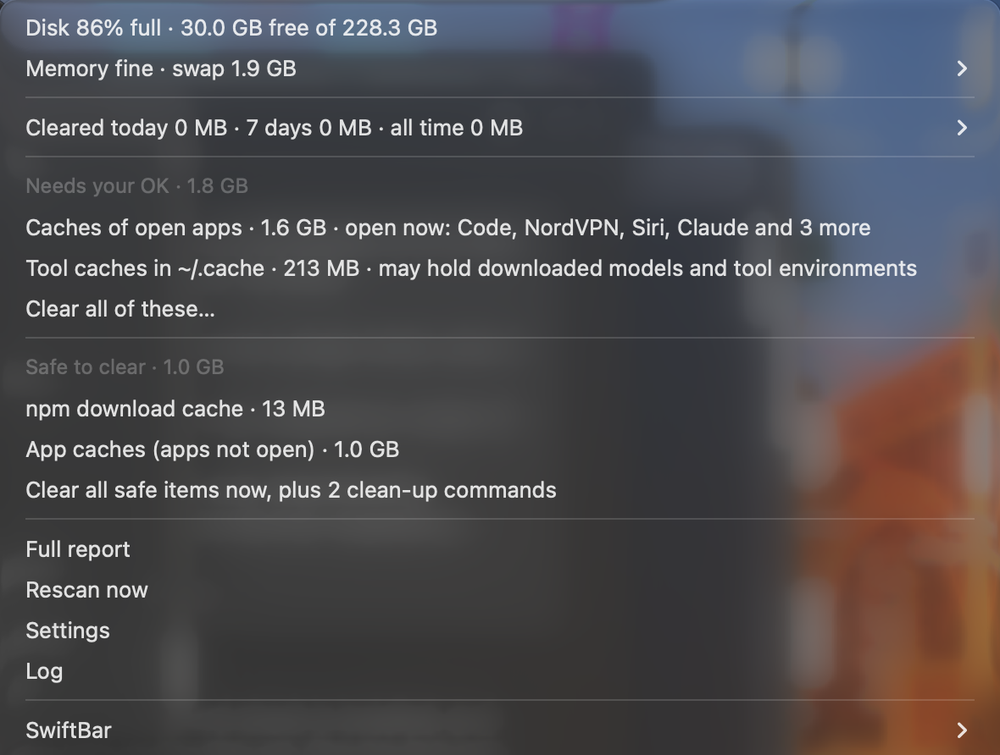
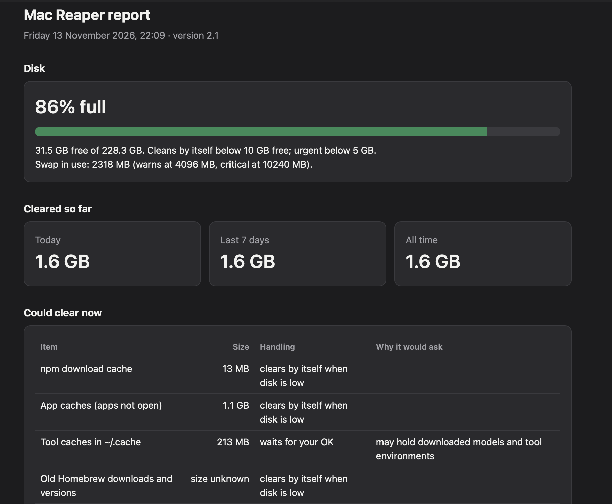

Mac Reaper
A disk and memory watchdog for macOS that lives in the menu bar. It clears regenerable caches when the disk runs low, asks before touching anything an open app is using, and warns when swap is climbing.

Why it exists
It was written for an 8 GB MacBook Air that kept running out of disk. Clearing caches by hand got back a few GB each time, and within days the disk was full again. Then the Mac froze and restarted itself.
The crash report explained it:
panic: watchdog timeout: no checkins from watchdogd in 94 seconds Compressor Info: … with 18 swapfiles and LOW swap space
The disk wasn't filling up with files. Memory was running out, macOS was writing the overflow to disk as swap, and once there was no room for more swap the system stopped responding. After the restart, Activity Monitor showed where the memory was going: VS Code using about 7 GB across several windows, and the kernel responsible for 38.7 GB of the 46 GB written to disk since boot.
Closing all but one of those windows, and deleting nothing, did this:
So the tool watches both. It watches disk because caches do pile up, and it watches swap because swap is what fills a small Mac fastest.
How it decides
Everything it could clear goes into one of two groups. The difference is whether clearing it could get in the way of something you are doing.
Safe
Cleared by itself when the disk is low
- Caches of apps that aren't open
- Xcode build data, while Xcode is closed
- The npm download cache
- Dangling Docker images
- Old Homebrew downloads
Needs your OK
Listed in one dialog that waits for an answer
- Caches of apps that are open right now
- Xcode build data, while Xcode is open
- Gradle and Maven caches
- Tool caches in
~/.cache - The Docker build cache
- Trash items older than 30 days
What a check does
A background check runs every 10 minutes:
- It measures free disk and swap.
- It works out what could be cleared and how big each item is.
- Below 10 GB free, it clears the safe group, then shows a dialog listing the rest. No answer within two minutes counts as "not now".
- When macOS reports memory pressure and swap is above 4 GB, or swap is growing fast, it sends a notification naming the apps using the most memory. Above 10 GB of swap the notification is urgent.
Warnings can be snoozed from the menu for 1, 4 or 24 hours. Critical ones still come through, and safe clean-ups still run.
It never quits an app unless you pick Quit in the menu, and never touches documents, logs or crash reports.

The report also lists large things the reaper leaves alone, such as virtual machine disks, simulators and downloaded models, with what you can do about each, so nothing big goes unnoticed.
Quitting an app from the menu
Swap only goes down when the apps holding the memory let go of it. Deleting files doesn't help, but quitting the right app does. So the menu lists the apps using the most memory, measured the way Activity Monitor measures them, and you can quit any ordinary app straight from that list. System processes are listed but can't be clicked.
Clicking an app opens a dialog with three choices:
- Quit closes the app the normal way, so it can still ask about unsaved work.
- Force quit stops it at once and asks once more first. It's for an app that has stopped responding.
- Not now leaves it running.
The first time, macOS asks whether SwiftBar may control that app. Allow it, or Quit can't work.
Under the hood
- One bash script of about 1,100 lines, written for the bash 3.2 that macOS ships.
- A launchd agent runs the check. The menu is a three-line SwiftBar plugin that asks the same script to print it.
- Open apps come from
lsappinfo, and each cache folder is matched to its app by bundle ID. - Memory per app is the footprint that
topreports, the same figure Activity Monitor shows. Warnings follow the kernel's memory pressure level, so swap left over from a busy spell doesn't set them off. - Quit sends the app a normal quit request through AppleScript. Force quit signals the app's processes directly.
- State is plain text: a log, a history of every deletion and the latest scan. The report is generated HTML.
- Thresholds, the Trash age limit and a keep-list for caches live in one settings file.
Install
brew install --cask swiftbar git clone https://github.com/darrenrabbs/reaper.git bash reaper/mac-reaper.sh --install
SwiftBar is only needed for the menu bar icon. Open it once and choose a plugin folder before running the last line. To remove everything, run the script with --uninstall.
Status
This is an early version that has run on one Mac so far. It deletes files, so check what it would clear first: --dry-run shows a full clean-up without deleting anything.
The source and releases are on GitHub. It was built by Darren Rabbitt with Claude as the coding agent.